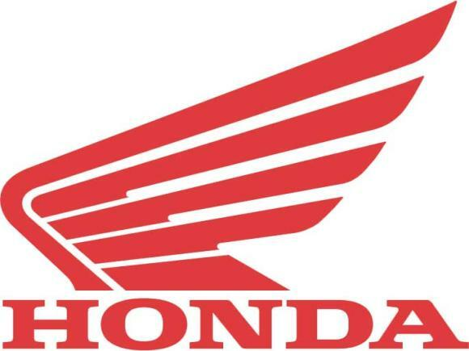

MOTORCYCLE

As raízes da BMW estão ligadas a Karl Rapp e Gustav Otto. Em 1917, a empresa Rapp Motorenwerke Byertoren Werke GmbH, Aktiengesellschaft AG. Em 1916, a empresa Flugmaschinenfabrik Gustav Otto foi incorporada à Bayerische Flugzeug-Werke AG (BFW) a pedido do governo. A BMW AG posteriormente transferiu suas operações de construção de motores – incluindo a empresa e os nomes da marca – para a BMW, em 1922. A data de fundação da BMW, 7 de março de 1916, entrou para a história como a data de nascimento ,da Bayerische Motoren Werke AG.
A história da Ducati teve início em 1926 quando a família Ducati associou-se a investidores bolonheses, para fundar a Società Radio Brevetti Ducati. O objetivo era produzir componentes para as transmissões de rádio, baseando-se nas patentes de Adriano Ducati. Começaram com o famoso condensador Manens e logo se seguiram outros componentes. A expansão foi rápida e logo conquistaram o respeito da indústria internacional. Em 1935 a empresa muda-se para um complexo extremamente moderno no centro de Bolonha. A indústria Ducati começou a extensão no estrangeiro e abriram filiais em Londres, Paris, Nova Iorque, Sydney e Caracas. A II Grande guerra foi muito dura para a Ducati. As fábricas Borgo Panigale foram destruídas, mas os irmãos Ducati não baixaram os braços. Durante a guerra estudaram e planejaram novos produtos e a introdução nos mercados no fim dos conflitos. Em setembro de 1946, na feira de Milão foi apresentado o motor auxiliar de bicicletas que se tornou o mais famoso do mundo: o Cucciolo. Em pouco tempo o Cucciolo transformou-se numa moto em miniatura. Graças ao seu sucesso, a Ducati afirmou-se no setor mecânico. Em 1952 nasceu a futurista Cruiser 175 cc com ignição elétrica e transmissão automática. Em 1954 chegou à Ducati, aquele que seria um dos mitos do mundo do motociclismo: o engenheiro Fabio Taglioni. Professor em Imola, Taglioni já tinha construído motos de caráter técnico original e de uma performance assombrosa. O design Taglioni, avant-guarde e não conformista foi batizado nas corridas. Ao estrear-se na Ducati, o engenheiro tentou provar a qualidade das suas soluções, participando de corridas de longa distância como a de Milão-Tarranto.
A lendária Harley-Davidson é muito mais do que um ícone da cultura norte-americana. É, certamente, o mais tradicional e um dos maiores fabricantes de motocicletas do mundo na atualidade. A empresa, que hoje possui três grandes fábricas nos Estados Unidos, emprega diretamente cerca de nove mil trabalhadores e deverá atingir uma produção de quase 300 mil motos neste ano. São números expressivos, que escondem um início modesto e repleto de desafios. A história da marca começou em 1903, num barracão localizado nos fundos da casa dos jovens irmãos Arthur e Walter Davidson, no município de Milwaukee, em Wisconsin. A dupla, que tinha em torno de 20 anos, acabava de se associar com William S. Harley, de 21 anos, para construir artesanalmente um pequeno modelo de motocicleta destinado às competições. Foi neste barracão (com três metros de largura por nove metros de comprimento), e em cuja fachada podia se ler o letreiro “Harley-Davidson Motor Company”, que foram produzidas as primeiras três motocicletas da marca. Dessas três motocicletas iniciais, uma foi vendida diretamente pelos fundadores da empresa, em Milwaukee, para Henry Meyer, amigo pessoal de William S. Harley e Arthur Davidson. Em Chicago, a primeira concessionária nomeada pela marca – C. H. Lang – comercializou outra dessas três motos fabricadas inicialmente. Os negócios começavam a evoluir, mas num ritmo lento. No dia 4 de julho de 1905, no entanto, uma motocicleta Harley-Davidson venceu, em Chicago, sua primeira competição – e isso ajudou a alavancar ainda mais as vendas da jovem empresa. Neste mesmo ano, foi contratado, em Milwaukee, o primeiro funcionário em tempo integral da Harley-Davidson Motor Company. No ano seguinte, com as vendas em ascensão, seus fundadores decidiram abandonar as instalações iniciais e se instalaram num armazém muito maior, com melhores condições de trabalho, localizado na Juneau Avenue (avenida Juneau), em Milwaukee. Mais cinco funcionários foram contratados para trabalhar lá em tempo integral. Ainda em 1906, a marca produziu o seu primeiro catálogo promocional. Em 1907, mais um Davidson junta-se ao negócio. William A. Davidson, irmão de Arthur e Walter, pede demissão do seu emprego e também passa a trabalhar na Harley-Davidson Motor Company. Ainda neste ano, o número de funcionários e a área de trabalho da fábrica praticamente foram dobrados. Um ano depois foi vendida a primeira motocicleta para a polícia de Detroit, dando início a uma parceria tradicional, que sobrevive até os dias de hoje. Em 1909, a Harley-Davidson Motor Company, então com seis anos de vida, apresenta a sua primeira grande evolução tecnológica no mercado de duas rodas. O mundo assistiu ao nascimento do primeiro motor V-Twin montado em motocicletas, um propulsor capaz de desenvolver 7 cv – uma potência considerável para aquela época. Em pouco tempo, a imagem de um propulsor com dois cilindros dispostos num ângulo de 45 graus tornou-se um dos ícones da história da Harley-Davidson. Em 1912, foi iniciada a construção definitiva da fábrica localizada na Juneau Avenue e inaugurada uma área exclusiva para peças e acessórios. Mesmo ano em que a empresa atingiu a marca de 200 concessionários nos Estados Unidos e exportou suas primeiras unidades para o Exterior, atingindo o mercado japonês.
Até a segunda metade da década de 1960, praticamente não existia mercado para motocicletas no Brasil. Só em 1968 o governo autorizou as importações, mas as alíquotas eram muito elevadas. A aposta no mercado brasileiro concretizou-se no dia 26 de outubro de 1971, quando começou a funcionar a Honda Motor do Brasil Ltda., responsável pela importação e distribuição dos produtos Honda no país. No início eram só motocicletas, dois anos mais tarde também os produtos de força. Desde as primeiras importações, a Honda estruturou sua Divisão de Peças Originais, o que garantia peças para reposição dos produtos. Em 1974, a Honda comprou um terreno de 1 milhão e 700 mil m² em Sumaré, no interior do estado de São Paulo, para instalar a fábrica de motocicletas. Um ano depois, o governo vetou a importação de motocicletas e o efeito foi drástico. Não havia alternativa, era hora de começar a produzir motocicletas no Brasil. A Honda antecipou seu projeto e construiu sua fábrica em Manaus (AM). A maior vantagem para a fábrica que se instalava no Brasil era o fato de Manaus ser uma zona franca, ou seja, isso permitia importar equipamentos do Japão de alta tecnologia com custos competitivos em relação aos produzidos no Brasil. A Honda investia no país e apostava no crescimento do mercado. Lançou vários modelos novos: o primeiro foi a CG 125 e depois vieram vários outros. Em 1977 já eram fabricadas 34 mil motocicletas no mercado nacional e a Honda respondia por 79% desse total. No início da década de 1980, a produção nacional média anual atingiu 185 mil unidades. Em 1981, foi produzida a primeira motocicleta movida a álcool no mundo, na fábrica de Manaus. No mesmo ano, é constituído o Consórcio Nacional Honda (CNH), que inicia suas atividades no país. Em 1995, a Moto Honda da Amazônia conquista o certificado ISO 9002, que reconhece a qualidade na fabricação de seus produtos com a mais alta tecnologia e alto padrão de qualidade. Um ano depois, a marca atinge o índice de 2 milhões de motocicletas produzidas no Brasil.
A Kawasaki Motores do Brasil Ltda (KMB) é uma subsidiária da Kawasaki Heavy Industries Ltd (KHI) sediada no Japão. A Kawasaki atua no Brasil desde 1973 fornecendo equipamentos e serviços para grandes projetos industriais, energéticos, navais e aeroespaciais de grandes empresas brasileiras das áreas de siderurgia, construção, aviação, entre outras. No dia 15 de outubro de 2008, com a inauguração da primeira concessionária oficial da Kawasaki Motores do Brasil em São Paulo (SP), os produtos de consumo da Kawasaki - motocicletas - começam a ser oficialmente introduzidos no País. Visando a expansão da marca no país, foi inaugurado em setembro de 2009, a primeira unidade produtiva da Kawasaki em território Latino-Americano, na cidade de Manaus (AM). Com isso, a confiança da Kawasaki no território brasileiro aumentou significativamente, pois até então a marca estava presente na importação e comercialização de motocicletas. O nome Kawasaki representa uma empresa tecnológica cujas atividades englobam desde projetos internacionais em grande escala até produtos utilizados na vida diária e para recreação. Em cada etapa, a empresa empenha a máxima atenção ao ser humano e ao meio ambiente. Cem anos de inovação permitiram à companhia estabelecer uma fundação firme como uma empresa líder em tecnologia, totalmente preparada para um novo século de inovação e expansão, almejando novos mercados, novos produtos e novas idéias.
A Suzuki é uma marca japonesa representada no país pela J Toledo Suzuki Motos do Brasil, uma empresa 100% nacional que detém o direito exclusivo da marca, fabricação e comercialização das motocicletas Suzuki para todo o território brasileiro. O grupo conta com o apoio tecnológico da Suzuki Motor Corporation. Fundada em 24 de setembro de 1992, a J Toledo tem sua unidade fabril instalada no Pólo Industrial de Manaus e seu centro administrativo e de distribuição em Jundiaí (SP). Hoje, a empresa conta com mais de 400 colaboradores e produz 26 diferentes modelos de motocicletas e quadriciclos com qualidade e garantia Suzuki. Fábrica da Suzuki em Jundiaí Todo o processo de comercialização das motocicletas Suzuki no Brasil tem início com a vinda de suas partes e peças do Japão, pelo processo CKD (completamente desmontado). A fim de atender ao índice de nacionalização obrigatório e cumprir as normas estabelecidas pela Suframa (Superintendência da Zona Franca de Manaus), são agregados às motocicletas componentes nacionais, sempre sob a orientação da Suzuki Motor Corporation. A linha Suzuki é composta por diferentes modelos que representam todas as categorias motociclísticas: desde as clássicas custons de alta cilindrada, até as superesportivas de competição, passando por scooters, streets e, também, os quadriciclos. Com quase 20 anos de presença no mercado nacional de duas rodas, a Suzuki conseguiu, graças à determinação e esforço de seus colaboradores e concessionários, oferecer aos seus clientes a qualidade e tecnologia de ponta das motocicletas Suzuki. Em 2009, a empresa se associou à Abraciclo (Associação Brasileira dos Fabricantes de Motocicletas, Ciclomotores, Motonetas, Bicicletas e Similares), instituição que tem por objetivo divulgar, apoiar e defender as atividades e interesses relacionados ao setor motociclístico
A marca britânica de motocicletas Triumph é uma das mais tradicionais no mundo das duas rodas. A empresa, que comemorou seu centenário em 2002, tem atividades em outros 12 países – Estados Unidos, Inglaterra, Austrália, Itália, Alemanha, Japão, Suíça, Suécia, França, Bélgica, Holanda e Japão – e comercializa cerca de 36 mil unidades por ano. Apesar de ter celebrado 100 anos em 2002, a Triumph é mais antiga. A marca nasceu na última década do Século 19, após a ida do alemão Siegfried Bettmann para a Inglaterra. O empresário, que até então comercializava máquinas de costura, ficou impressionado com o aumento da frota de bicicletas naquele país e resolveu entrar no novo negócio. Bettmann deu o nome de Triumph às bicicletas que vendia, por ser um nome de fácil assimilação em toda a Europa. A primeira motocicleta saiu da linha de montagem da Triumph, em Conventry (Inglaterra), no ano de 1902 – data de partida para a contagem do centenário - e recebeu a nomenclatura de “N°1”. O veículo de duas rodas nada mais era que uma bicicleta com estrutura reforçada, equipada com um motor de combustão interna do fabricante belga Minerva, com 2,25 hp de potência, que ficava alocado na parte dianteira do quadro. A Triumph ganhou popularidade rapidamente por um motivo: em pleno Fordismo, enquanto os engenheiros de outros fabricantes se preocupavam com a produção em larga escala, Mauritz Schulte, que era responsável pela engenharia da marca, procurava aprimorar e desenvolver novos mecanismos para as motocicletas. Essa política, em poucos anos, possibilitou o lançamento de outros modelos de excelente qualidade e tecnologias modernas para a época, como a partida a pedal. Durante a 1ª Guerra Mundial, o governo da Inglaterra designou à Triumph a missão de equipar o exército britânico. As motocicletas da marca eram utilizadas para levar os soldados ao fronte de batalha. O último acontecimento relevante nos anos 10 foi o rompimento entre Schulte e Bettmann, que ocorreu porque o fundador da marca queria diversificar a gama de produtos e acelerar o ritmo da linha de produção, algo que ia contra os princípios do engenheiro. Nesse período de sua história, a Triumph passou a fabricar até mesmo automóveis, o que dividiu a empresa em Triumph Motor Co. (automóveis) e Triumph Cycle Co. (duas rodas). Devido à Grande Depressão, os anos 20 foram muito difíceis para a Triumph. Por esse motivo, a marca começou a produzir motocicletas “populares”, como a Modelo P, que tinha 494 cilindradas e custava apenas 42 libras. Foram comercializadas 20 mil unidades desse modelo. Só como comparação, a Type SD, top de linha da marca, saía na época por 83 libras. Em 1937, sob o comando de Jack Sangster, a divisão de motocicletas lançou um modelo que se tornaria um ícone anos depois: a Speed Twin, conhecida também como Tiger 100. Esta motocicleta atingia 160 km/h, fato que a Honda, por exemplo, só iria conseguir em 1969, com a CB 750.
A Yamaha Motor Corporation Ltd., que inicialmente fazia parte da Nippon Gakki Corporation, foi fundada por Genichi Kawakami em 1955. Genichi Kawakami sucedeu seu pai aos 38 anos, como o quarto presidente da Nippon Gakki em 1950. Ele possuía uma ambição ardente em seu jovem coração. “É responsabilidade de um líder corporativo melhorar a performance da companhia e quando houver possibilidades financeiras, promover pesquisas dos próximos produtos que levarão ao desenvolvimento de novos negócios”, dizia. Com este ideal em mente ele começou, em novembro de 1953, a desenvolver um novo produto que poderia utilizar o equipamento de fabricação de hélices. Dez meses depois, o protótipo do primeiro modelo de motocicleta estava terminando. A produção começou em janeiro de 1955 e as vendas no Japão iniciaram em fevereiro. Então, em 1º de julho a divisão de motocicletas da Nippon Gakki foi expandida para estabelecer a Motor Co. Ltd. Tudo começou com a motocicleta de 125cc YA-1, conhecida popularmente como “Akatombo” ou “libélula vermelha”. Foi a primeira motocicleta da companhia, símbolo da qualidade, do desenvolvimento e da originalidade que desde então identificam a marca Yamaha. Naqueles primeiros dias com um mercado em ascensão, a Yamaha Motor teve a idéia de participar de corridas como a melhor estratégia para mostrar claramente a superioridade do produto e alargar o reconhecimento da marca Yamaha. Dez dias após a fundação em 1º de julho de 1955, a equipe Yamaha venceu a 3ª Corrida de Subida do Monte Fuji e varreu os primeiros lugares nas competições que se sucederam até o ano seguinte no Japão, quando passou a participar e destacar-se também em competições internacionais O nome usado pela Yamaha Motor originou-se no nome de Torakusu Yamaha, o fundador de sua companhia matriz, Nippon Gakki (atual Yamaha Corporation). Torakusu Yamaha nasceu em 1851 — o terceiro filho de um astrônomo que serviu ao clã Kishu Tokugawa —, numa era em que o Japão presenciava enormes reformas à medida que se transformava de um país feudal numa sociedade moderna. Aos 35 anos, consertava órgãos avariados numa escola primária em Hamamatsu quando lhe veio a idéia de construir ele mesmo os órgãos. Superou grandes dificuldades e teve sucesso na produção do primeiro órgão feito no Japão em 1887. A Yamaha Reed Organ Manufacturing Company foi montada em 1888. Ele fundou a companhia Nippon Gakki e foi o seu primeiro presidente em 1897. O emblema da Yamaha Motor, um arranjo de três diapasões usados para afinar instrumentos musicais, foi definido pela Nippon Gakki em 1898 e tem sido usado pela Yamaha Motor desde a sua fundação. Os três diapasões no emblema original incorporavam a idéia de “três braços de produção, marketing e tecnologia ousadamente ascendendo para o mundo”.